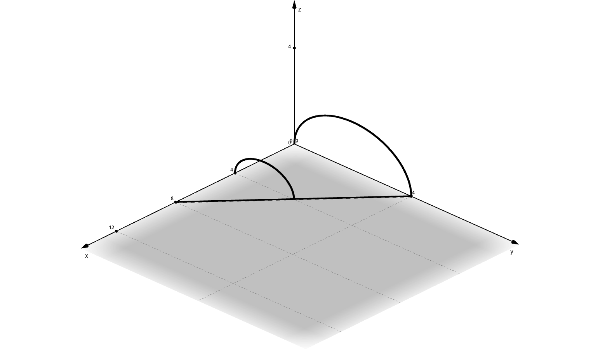

The base of a solid is a region in the first quadrant bounded by the \(x\)-axis, the \(y\)-axis, and the line \(x+2y=8\), as shown in the figure above.
If cross sections of the solid perpendicular to the \(x\)-axis are semicircles, what is the volume of the solid?
The base of a solid is a region in the first quadrant bounded by the \(x\)-axis, the \(y\)-axis, and the line \(x+2y=8\), as shown in the figure above.
If cross sections of the solid perpendicular to the \(x\)-axis are semicircles, what is the volume of the solid?
Each semicircle has a diameter equal to the \(y\)-value of the line.
For example, the semicircle at the origin has a diameter of \(4\), corresponding to the point on the line \((0,4)\).

The area of each semicircle is:
$$ A = \frac{1}{2}\pi r^2 $$
The radius is half of the \(y\)-coordinate/diameter.
$$ x+2y=8 $$
$$ y=-\frac{1}{2}x+4 $$
$$ r=\frac{y}{2} $$
$$ r = -\frac{1}{4}x+2 $$
The volume is given by the following integral:
$$ V = \int\limits_0^8 A_{\text{semicircle}} dx $$
$$ V = \int\limits_0^8 \frac{1}{2}\pi \left(-\frac{1}{4}x+2\right)^2 dx $$
$$ V = \frac{1}{2}\pi \int\limits_0^8 \left(-\frac{1}{4}x+2\right)^2 dx $$
Solve this definite integral using your calculator or by hand.
$$ V = \frac{1}{2}\pi \int\limits_0^8 \left(-\frac{1}{4}x+2\right)^2 dx $$
$$ V = \frac{1}{2}\pi \left(\frac{32}{3}\right) $$
$$ V \approx \boxed{16.755} $$